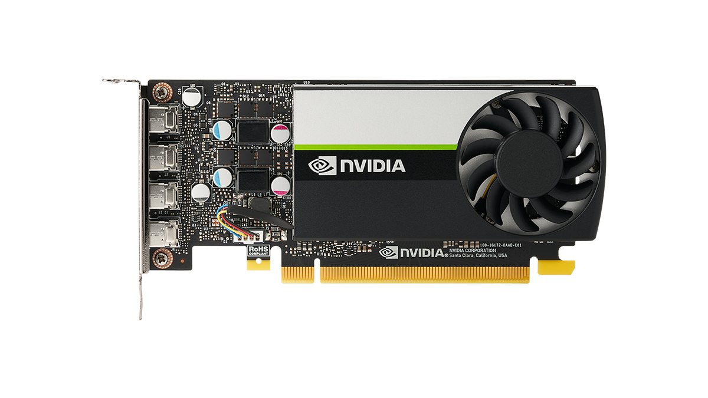

As you have seen the icon in the site, this site is created mainly to inform people about nvidia's success and its history throughout their years in the gaming industry. They've been dominant for centuries and they have been one of the biggest
companies in the computer industry. How did the CEO come up with revolutionary idea's? What made Nvidia so popular? Why are prices so high during the pandemic? People have a lot of questions about the company which I'll be answering today.

History
Nvidia was founded on April 5, 1993, by Jensen Huang (CEO as of 2021), a Taiwanese American, previously director of CoreWare at LSI Logic and a microprocessor designer at Advanced Micro Devices (AMD), Chris Malachowsky, an electrical engineer
who worked at Sun Microsystems, and Curtis Priem, previously a senior staff engineer and graphics chip designer at Sun Microsystems. In 1993, the three co-founders believed that the proper direction for the next wave of computing was accelerated
or graphics-based computing because it could solve problems that general-purpose computing could not. They also observed that video games were simultaneously one of the most computationally challenging problems and would have incredibly high
sales volume. Video games became the company's flywheel to reach large markets and funding huge R&D to solve massive computational problems. With only $40,000 in the bank, the company was born. The company subsequently received $20 million
of venture capital funding from Sequoia Capital and others. Nvidia initially had no name and the co-founders named all their files NV, as in "next version". The need to incorporate the company prompted the co-founders to review all words with
those two letters, leading them to "nvidia", the Latin word for "envy". Nvidia went public on January 22, 1999. he release of the RIVA TNT in 1998 solidified Nvidia's reputation for developing capable graphics adapters. In late 1999, Nvidia
released the GeForce 256 (NV10), most notably introducing on-board transformation and lighting (T&L) to consumer-level 3D hardware. Running at 120 MHz and featuring four-pixel pipelines, it implemented advanced video acceleration, motion compensation,
and hardware sub-picture alpha blending. The GeForce outperformed existing products by a wide margin. Due to the success of its products, Nvidia won the contract to develop the graphics hardware for Microsoft's Xbox game console, which earned
Nvidia a $200 million advance. However, the project took many of its best engineers away from other projects. In the short term this did not matter, and the GeForce2 GTS shipped in the summer of 2000. In December 2000, Nvidia reached an agreement
to acquire the intellectual assets of its one-time rival 3dfx, a pioneer in consumer 3D graphics technology leading the field from mid 1990s until 2000. The acquisition process was finalized in April 2002. In July 2002, Nvidia acquired Exluna
for an undisclosed sum. Exluna made software-rendering tools and the personnel were merged into the Cg project.[31] In August 2003, Nvidia acquired MediaQ for approximately US$70 million. On April 22, 2004, Nvidia acquired iReady, also a provider
of high performance TCP/IP and iSCSI offload solutions. In December 2004, it was announced that Nvidia would assist Sony with the design of the graphics processor (RSX) in the PlayStation 3 game console. On December 14, 2005, Nvidia acquired
ULI Electronics, which at the time supplied third-party southbridge parts for chipsets to ATI, Nvidia's competitor. In March 2006, Nvidia acquired Hybrid Graphics. In December 2006, Nvidia, along with its main rival in the graphics industry
AMD (which had acquired ATI), received subpoenas from the U.S. Department of Justice regarding possible antitrust violations in the graphics card industry.
Why did NVIDIA win the GPU market?
NVIDIA partnered early on with TSMC which enabled them to avoid immense costs of building and running their own fabs. Intel became what it is today by outspending others in capital expenditures by building leading-edge fabs (chip factories) that
cost billions and become obsolete in dizzying time. A leading edge fab has to be amortized in less than two years because of the Moore’s law. That is literally millions per day and that is why they are run around the clock, 24/7/365. Only
Intel was willing to spend such a large fraction of their rising revenues on designing, building and running their fabs in a very risk-taking fashion, always committing billions to FUTURE demand. Early on most of their competitors thought
they were crazy, but they turned out to be crazy like a fox. This aggressive risk-taking in the form of continually spending billions and billions is what caused their revenues to keep rising, creating a reflexive virtuous loop which is now
part of the history of computing. As it became quickly clear that no other chip company with their own designs can compete with Intel, it was believed that they achieved a near permanent monopoly on computing in general. Enter TSMC and the
advent of fabless chip design companies. Early on nobody believed that foundries, i.e. companies focused solely on building and running leading edge fabs that are manufacturing other’s designs would be able to compete with Intel. But that
turned out to be wrong - there were enough major chip customers such as Qualcomm, NVIDIA, Marvell, Broadcom and MediaTek to bring huge revenues that enabled TSMC to fund their own process manufacturing research to keep up with Intel. The mobile
phone revolution obviously played a major part in that. Intel completely missed it, thinking that the treadmill of Moore’s law and ever faster CPUs was impervious to little things such as mobile phones of the Nokia kind that dominated early
on. They also did not think that the dominance of Intel architecture and its legacy can be threatened. ARM changed that too, with another model of separating IP licensing from design. It is the rise of deep learning and alternate forms of
computation, which are nowadays being recognized as differentiable programming that changed NVIDIA fortunes and enabled them to became a leader in computing in general, as opposed to only a (very) successful leader in a niche gaming market.
Intel stranglehold on computing and PC profits in particular was based on the fact that they captured the most profits by selling the parts with the highest margins by far, which were the CPUs. All others were reduced to commoditization, such
as PC manufacturers. This is why CPUs used to be the most expensive chips in a PC. That is not the case any more, as the top GPUs are the most expensive chips in the best PCs now. How did this come to pass and why did Intel allow it to happen?
They became victims of their own success, as Intel architecture carried enormous amounts of legacy baggage. A general -purpose Intel CPU has to deal with lots and lots of things such as caching, out-of-order issue and execution, branch prediction
and deep pipelining etc. , not to mention auxiliary functions such as on-chip graphics. All of this costs a lot in terms of effective die area devoted to actual computing. For instance, a hyper-threaded quad-core Intel CPU has 4 cores with
two threads each, meaning there are 8 sets of execution units, with each being able to issue five or more instructions in parallel, in theory. The reality is that the actual execution efficiency for sequential code is less than 1.5, meaning
that out of five or more, only one more instruction is executed every second cycle in parallel on average. Software optimized for multiple cores changes this situation, but that is is still rather specific and not very common. In stark contrast,
a leading GPU has thousands of floating-point execution units, optimized to run specialized code with lots of instruction level parallelism known in advance. Such code used to be only a province of specialized applications such as graphics
and gaming. Deep learning AI revolution changed all that. All of this costs a lot in terms of effective die area devoted to actual computing. For instance, a hyper-threaded quad-core Intel CPU has 4 cores with two threads each, meaning there
are 8 sets of execution units, with each being able to issue five or more instructions in parallel, in theory. The reality is that the actual execution efficiency for sequential code is less than 1.5, meaning that out of five or more, only
one more instruction is executed every second cycle in parallel on average. Software optimized for multiple cores changes this situation, but that is is still rather specific and not very common. In stark contrast, a leading GPU has thousands
of floating-point execution units, optimized to run specialized code with lots of instruction level parallelism known in advance. Such code used to be only a province of specialized applications such as graphics and gaming. Deep learning AI
revolution changed all that.